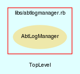

|  |
DownloadManager.rb
DownloadManager class handles all downloading of components needed for AbTLinux.
Created by Eric D. Schabell <erics@abtlinux.org> Copyright 2006, GPL.
This file is part of AbTLinux.
AbTLinux is free software; you can redistribute it and/or modify it under the terms of the GNU General Public License as published by the Free Software Foundation; either version 2 of the License, or (at your option) any later version.
AbTLinux is distributed in the hope that it will be useful, but WITHOUT ANY WARRANTY; without even the implied warranty of MERCHANTABILITY or FITNESS FOR A PARTICULAR PURPOSE. See the GNU General Public License for more details.
You should have received a copy of the GNU General Public License along with AbTLinux; if not, write to the Free Software Foundation, Inc., 51 Franklin St, Fifth Floor, Boston, MA 02110-1301 USA
Constructor for the DownloadManager class.
RETURN DownloadManager - an initialized DownloadManager object.
[ show source ]
# File DownloadManager.rb, line 42
42: def initialize
43: end
Retrieves the AbTLinux news feed.
RETURN boolean - True if the AbTLinux news feed has been retrieved, otherwise false.
[ show source ]
# File DownloadManager.rb, line 72
72: def retrieveNewsFeed
73: end
Downloads a given package source.
PARAM String - the name of the package for which the source is to be downloaded. RETURN boolean - True if the package source has been downloaded, otherwise false.
[ show source ]
# File DownloadManager.rb, line 53
53: def retrievePackageSource( packageName )
54: end
Downloads a given pacakge tree.
PARAM String - the name of the package tree to be retrieved. RETURN boolean - True if the package tree is retrieved, otherwise false.
[ show source ]
# File DownloadManager.rb, line 63
63: def retrievePackageTree( packageTreeName )
64: end
Updates a given package with available patches (version updates).
PARAM String - the name of the package to be updated. RETURN boolean - True if the given package has been updated, otherwise false.
[ show source ]
# File DownloadManager.rb, line 82
82: def updatePackage
83: end
Updates the package tree.
RETURN boolean - True if the package tree has been updated, otherwise false.
[ show source ]
# File DownloadManager.rb, line 91
91: def updatePackageTree
92: end